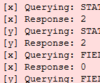
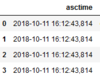
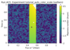

This page was generated from
docs/examples/Main.ipynb.
Interactive online version:
 .
.
QCoDeS Tutorials
Welcome to QCoDeS! This document will help you find an overview over the available tutorials and examples. Please note that the document is under construction an will eventually popluated further. Until then don’t forget to check the examples folder (online)
Logging
Title |
description |
local link |
online link |
|---|---|---|---|
 |
the logger module |
||
 |
log file parsing |
Plotting
Title |
description |
local link |
online link |
|---|---|---|---|
 |
Auto color scaling |
[ ]: